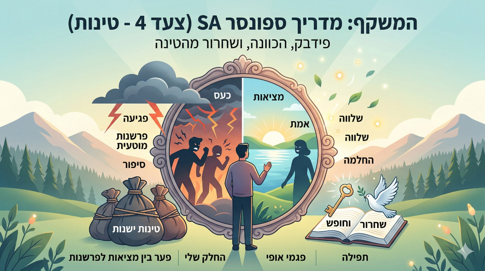

יש בינינו לא מעט חברים שאוהבים לכתוב את צעד 4 בעצמם, ממש "אולד סקול" על דף ועט או במסמך פרטי. אבל לפעמים, אחרי שהדברים עולים על הכתב, יש צורך לקבל איזה פידבק אובייקטיבי ולעשות סדר בראש לפני שניגשים לספונסר לצעד 5.
פבנוסף, לכולנו יש לפעמים צעדי 4 ישנים – טינות קשות ועקשניות שמעלות אבק ופשוט מסרבות להשתחרר. יש כאן הזדמנות מעולה להוריד מהן את האבק ולעבד אותן מחדש.
אתם פשוט משתפים איתו צעד 4 שכבר כתבתם, והוא עובר עליו סעיף-סעיף כדי לעזור:
לזהות את הפער בין מה שקרה במציאות לבין הפרשנות שהמחלה מספרת לנו.
לראות איפה נתנו לאחרים לנהל לנו את הערך העצמי.
לדייק בצורה כנה את החלק שלנו (אנוכיות, תועלת עצמית, חוסר כנות ופחד) ולזהות פגמי אופי נוספים שאולי הסתתרו שם.
פשוט נכנסים לקישור של הבוט למטה וכותבים לו את המשפט הבא: "היי, אני רוצה להתחיל לעבוד על הצעד הרביעי."